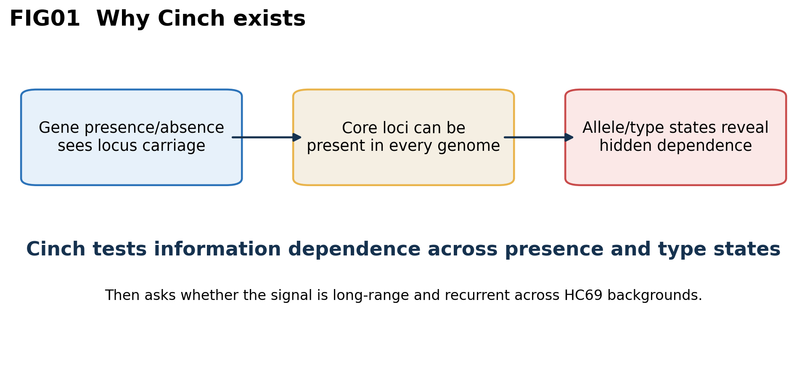
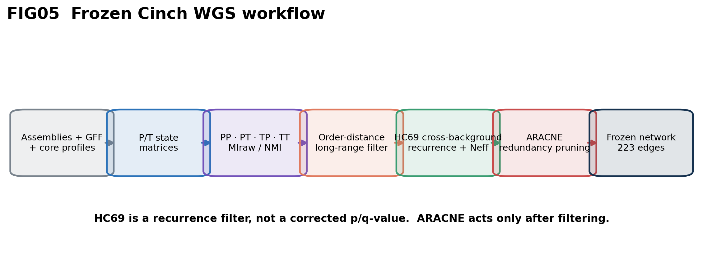
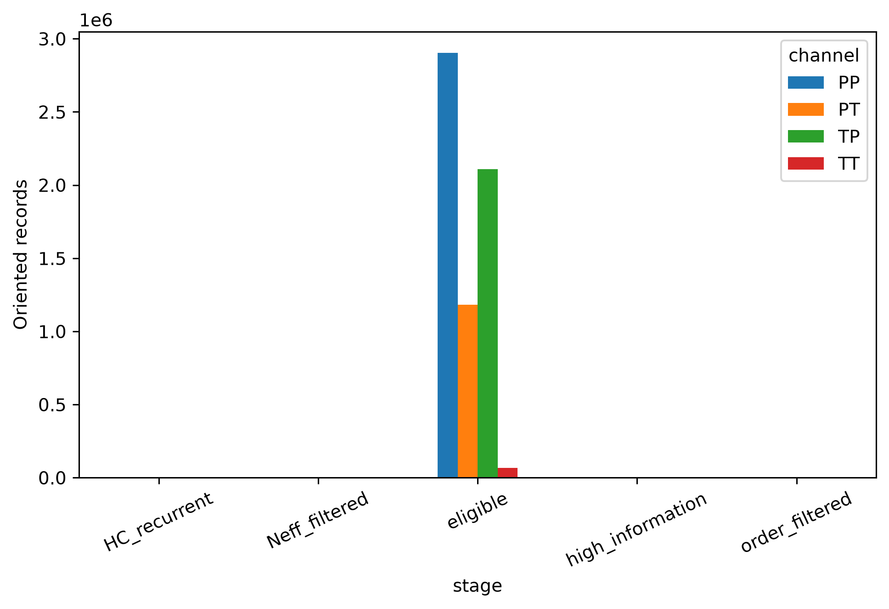
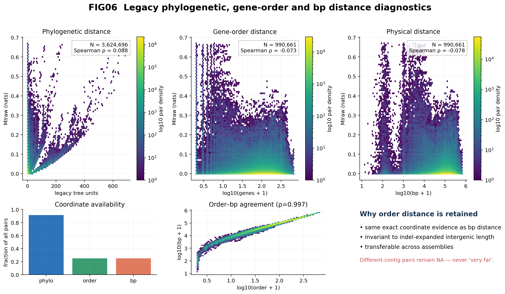
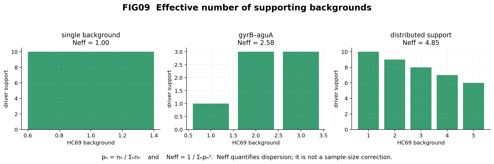

Why Cinch?
Presence/absence is blind when two core genes are present in every isolate. Cinch keeps both P and T state resolutions and tests PP, PT, TP and TT.

One state model, three questions
Association
MIraw/NMI quantify dependence in nats; contingency residuals identify driver states.
Linkage
Channel-specific order-distance envelopes ask whether a signal is exceptional at its genomic separation.
Recurrence
HC69 asks whether the same driver repeats across backgrounds; Neff measures support dispersion.

Frozen SPN534 result
unique frozen candidate edges
loci in the candidate graph
PP / PT / TP / TT
| stage | PP | PT | TP | TT |
|---|---|---|---|---|
| eligible | 2,902,845 | 1,180,977 | 2,109,466 | 67,853 |
| high information | 646 | 606 | 853 | 76 |
| order filtered | 309 | 303 | 448 | 42 |
| HC69 recurrent | 50 | 71 | 160 | 1 |
| Neff filtered | 4 | 58 | 160 | 1 |

SPN534 informed development and is not an unseen validation cohort. The frozen table stops before ARACNE.
Why order distance is retained
Legacy phylogenetic distance is available for 3,624,696 of 3,955,078 pairs. Order and bp are each available for the same 990,661 pairs and correlate at Spearman ρ=0.9973. Order is retained for transferable locus units, not greater availability. Different-contig pairs stay NA.

The lead view uses fixed-width bins and point area proportional to √N. The all-pair density and availability audit below shows why the axes differ in coverage.

From “multiple populations” to a measurable quantity
For driver support counts nh, ph=nh/Σnh and Neff=1/Σph2. Neff is support dispersion, not an adjusted sample size or p-value.


What TT adds
The upper-left PP≈0 / TT-high region contains dependencies unavailable to a presence-only analysis. The frozen TT edge gyrB–aguA has MIraw 2.1602 nats, NMI 0.7983, order distance 120.29 genes and Neff 2.5789.

Published comparator
982/985 high-MI audit pairs are direct published Coinfinder association/dissociation edges; 963/985 lie in the same published component. This is concordance, not causal ground truth.

Tree-aligned state evidence
The published tree, HC69 strip and exact P/T states share the same 534-isolate order.

Explore the full frozen graph
Search products, toggle channels, filter MIraw/NMI/Neff/order/HC support, recolor edges and inspect exact metadata.

Static communities are descriptive graph partitions, not automatically pathways.